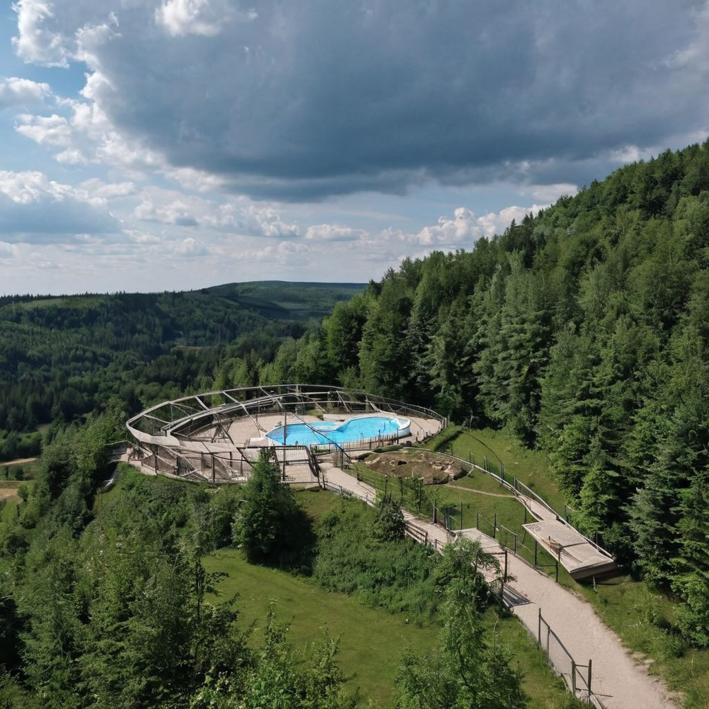
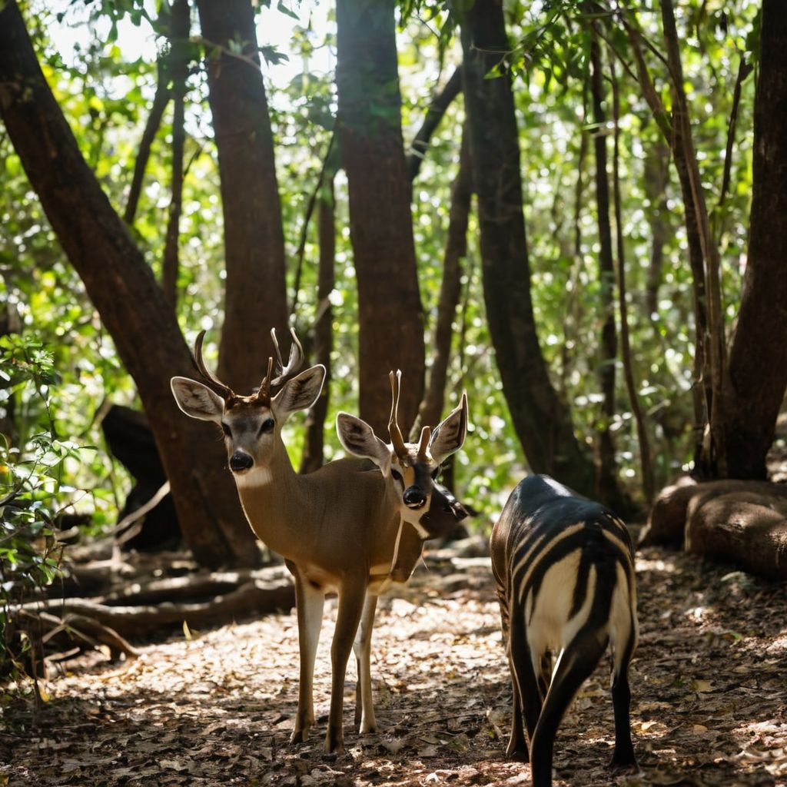
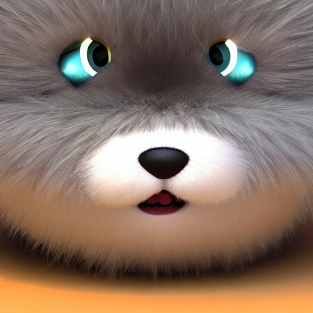

-
Nowe interaktywne wydarzenia na żywo: Nasze wirtualne zoo wprowadza regularne transmisje na żywo, podczas których można obserwować zwierzęta w ich naturalnym środowisku. Wkrótce planujemy specjalne pokazy z udziałem naszych ekspertów, którzy opowiedzą o zachowaniach i życiu dzikich zwierząt.
- Nowe interaktywne wydarzenia na żywo: Nasze wirtualne zoo wprowadza regularne transmisje na żywo, podczas których można obserwować zwierzęta w ich naturalnym środowisku. Wkrótce planujemy specjalne pokazy z udziałem naszych ekspertów, którzy opowiedzą o zachowaniach i życiu dzikich zwierząt.
- Program edukacyjny dla szkół: Rozpoczynamy program edukacyjny dla szkół, który umożliwi nauczycielom organizację wirtualnych lekcji związanych z przyrodą i ochroną środowiska. To fantastyczna okazja, by uczniowie mogli zgłębić wiedzę na temat różnorodności zwierząt i ich znaczenia dla ekosystemów.
- Nowe gatunki do odkrycia: Nasza kolekcja zwierząt stale się powiększa! Wkrótce będziemy mieli nowe gatunki do zaprezentowania, w tym rzadkie i fascynujące stworzenia z różnych kontynentów.
- Zajęcia interaktywne dla dzieci:Dla naszych najmłodszych odkrywców przygotowujemy nowe zajęcia interaktywne, które pozwolą dzieciom bliżej poznać świat zwierząt w sposób dostosowany do ich wieku i zainteresowań.
- Konkursy i wydarzenia społecznościowe:Przygotowujemy serię konkursów, wyzwań fotograficznych i wydarzeń społecznościowych, które połączą miłośników zwierząt z całego świata. Bądź na bieżąco, by wziąć udział i wygrać fantastyczne nagrody!
-



